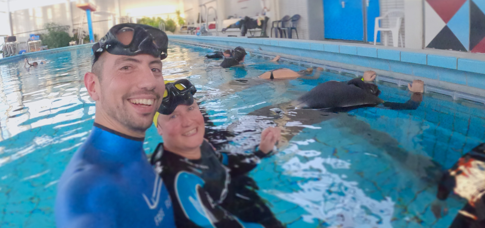

I am an Apnea Academy freediving instructor and I live and teach on the island of Zakynthos in Greece.
Please read below for more on me and my journey.

I was born and raised in Athens, but since my father is from Zakynthos, I have been in the water all my life.
I would follow my dad spearfishing since I was 4 or 5 years old, sometimes being out in the water for hours on end.
So, I've always had a loving and respectful relationship with the sea and felt calm just by getting in the water.
After watching the Big Blue I started being more interested in freediving and would always have my mask, snorkel and fins with me whenever I would go to water.
My studies and work were in web development and I was doing this in Athens until I saw some people freediving.
Turns out it was an Apnea Academy instructor teaching, so we had a chat and I started preparing for my first course.
After completing the course I became friends with Dimitris Koumoulos, who helped me immensely with training and overall guidance, I owe him a lot!
So, I made the decision to drop everything, move to Zakynthos and live in my grandparents home to be able to be close to the water and train to be an instructor.
This happened in 2018 in Tenerife under the guidance of the one and only Umberto Pelizzari (you can find me on AA's list of instructors).
I am also certified in first aid as a first responder as well as a pool lifeguard.
Last fall I became a KAD (Kids As Dolhpins) instructor, which is an amazing program with a 30 year experience that teaches freediving to children.
One of the most common questions new(er) freedivers have is what gear to use, so I thought I'd add my 2 cents here and share what I use.
Mask: Technisub Micromask - this is by far the best mask I've used, very durable,
high quality mask (make sure to get the original and not a clone/copy).
Snorkel: Beuchat Activa Tubair - or any curved soft snorkel like this.
Wetsuits: I work with G & Sea, a Greek wetsuit manufacturer that makes tailored wetsuits using only the finest Yamamoto materials,
send us an email or a message over at our Facebook page to quote you on your suit, you won't regret it.
Fins: I switched to Alchemy's V3-30 last year and I'm very happy, I went with the Medium / Soft stifness as I'm tall with relatively strong legs.
Noseclip>: Octopus ftw :)